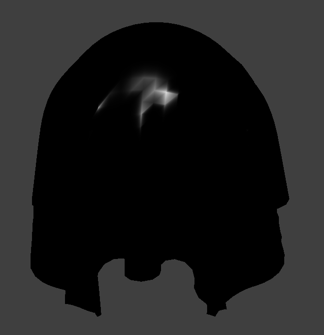
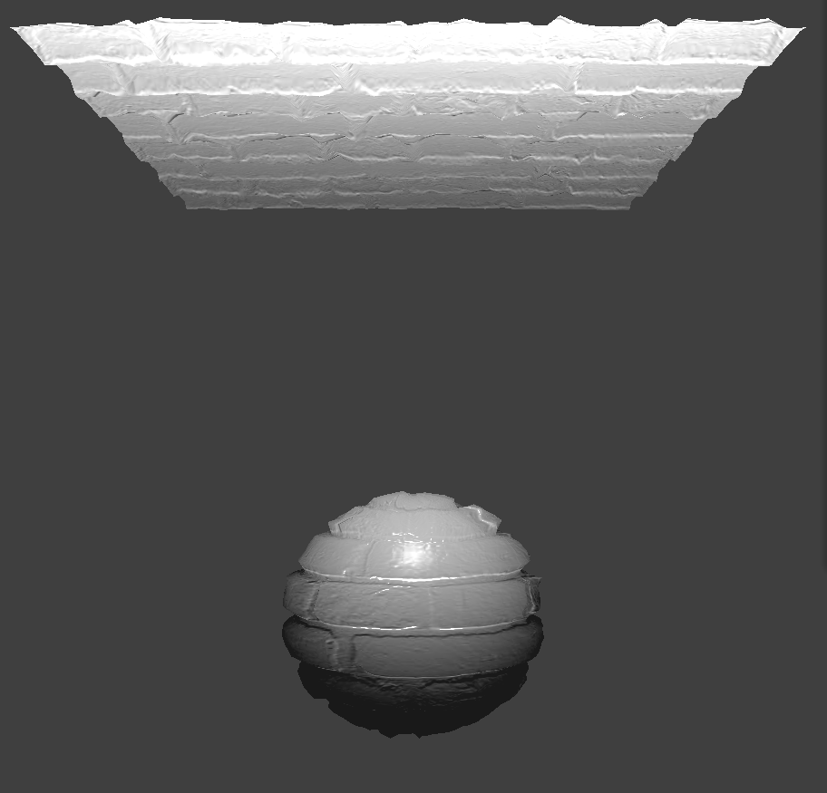

Overview
Give a high-level overview of what you implemented in this project. Think about what you've built as a whole. Share your thoughts on what interesting things you've learned from completing the project.
Part I: Masses and springs
We first placed evenly spaced points along the grid specified by the program parameters. These point masses are stored in row-major order in a 1D vector. We set pins, which prevent movement, on any point mass whose coordinates are in the pinned vector. Then, we created structural, shearing, and bending constraints in the manner laid out on the spec. These spring constraints are also stored in their own vector.
All constraints
Just shearing constraints
No shearing constraints
Part 2: Simulation via numerical integration
We simulated the motion of each point by taking into account external forces acting upon each point, like gravity, as well as spring forces caused by the spring constraints that bind these point masses together. We estimate this motion across each time step with Verlet integration, which takes into account the current position of the point, the previous position of the point, and the acceleration due to force, and attempts to estimate the next location of the point from that information. We also added a damping factor in order to simulate loss of energy due to things like friction. Finally, in order to prevent the point masses from moving too far from one another, we added a further restriction that none of the springs could be stretched out much more than their rest length.
scene/pinned4.json at rest, with default parameters.

Low damping parameter. Note how vigorously the cloth swings around and folds in on itself. This is how the cloth would behave if there was very little friction.

High damping parameter. This cloth slowly and gently billows into its resting position, not swinging much after reaching it.

Low ks (spring constant). This causes the cloth to be more "foldy", as the springs holding the point masses together are not as tight.

High ks (spring constant). The cloth ends up looking almost completely flat, except for at the ver top, as it falls into its resting position.

Low density. This lowers the mass of each point, lowering the external forces on them, creating an effect analogous to raising the spring constant.

High density. This raises the mass of each point, raising the external forces on them, creating an effect analogous to lowering the spring constant.
Part 3: Handling collisions with other objects
When handling collisions, we first check if a point mass is within (colliding with) an object. If so, then we calculate a correction vector and apply it to each intersecting point mass in order to bump it away from the object it is intersecting with.
The cloth interacting with the sphere at ks=5000.
The cloth interacting with the sphere at ks=500. Notice that the cloth is less stiff than before, since the spring constant is lower and allows for more elasticity/looseness.
The cloth interacting with the sphere at ks=50000. Notice that the cloth is now far more stiff, since the higher spring constant leads to less responsiveness from the springs.
The cloth resting calmly on a plane.
Part 4: Self Collisions
The idea behind self collisions is similar to checking for collisions with other objects. We use a spacially partitioned hash table to speed up this intersection checking. When two points in the same hash bucket are too close too each other, we bump them apart a bit.
The beginning of the cloth simulation.
The moment of the cloth simulation when it touches the plane.
Near the final resting state of the cloth.
State of a high density cloth several seconds after landing. The cloth is much more foldy and contains many wrinkles.
State of a low density cloth several seconds after landing. The cloth is much more smooth and contains very little folds.
State of a high ks cloth several seconds after landing. Similar to low density, the cloth is very smooth.
State of a low ks cloth several seconds after landing. Similar to high density, the cloth is very bumpy.
Part 5: Shaders
A shader program is a program run in parallel on the GPU that can modify graphics at certain stages of the graphics pipeline. Vertex shaders are programs that can modify the positions of vertices in meshes. Fragment shaders are programs that can modify the colors of fragments (pixels). Data can be passed in from the program to the vertex shader, which can then pass more data to the fragment shader, and in conjunction these shaders can perform calculations on each vertex and pixel in order to create interesting lighting and material effects.
Ambient lighting only. Ambient is just one uniform color, usually a dark one, to give unlit areas a bit of brightness.
Diffuse lighting only. Diffuse lighting is based on the cosine of the angle between the surface normal and the direction to the light, as per Lambert's law. It gives a uniform shaded look.
Specular lighting only. Specular lighting only occurs at angles near the mirror direction. It gives a strong bright highlight at those locations.
Blinn-Phong lighting, which is just the sum of ambient, diffuse, and specular lighting. It has a shiny, smooth look.
Custom texture, featuring Professor Hilfinger.
Bump mapping, with normal=25 and height=0.07.
Displacement mapping, with normal=25 and height=0.07.
Bump mapping, with the same settings as before and resolution at 16. This looks mostly the same.
Displacement mapping, with the same settings as before and resolution at 16. This looks more sharp and pointy than one might expect this brick texture to look.
Bump mapping, with the same settings as before and resolution at 128. This looks mostly the same.
Displacement mapping, with the same settings as before and resolution at 128. This looks more akin to the brick texture, with flat regions where the brick faces are, and notches in between the bricks. The sphere also appears more squashed than before.
Mirror texture.

Our custom fragment shader. This weird oscillating rainbow grid effect is achieved by plugging the vertex position and normal multiplying by the time into some sines and cosines. Then, this color is plugged into the Phong shading function shown previously. In order to access the time, the skeleton code had to be modified to pass in time as a uniform variable. The exact formula involving the sines and cosines is somewhat arbitrary and was found by experimentation.